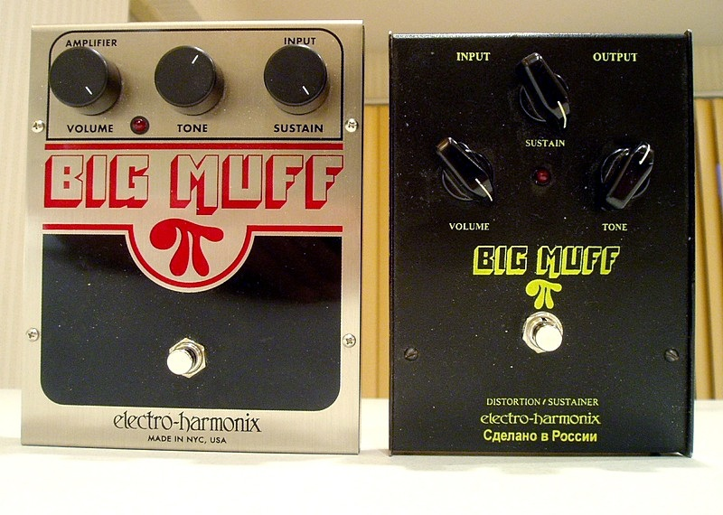
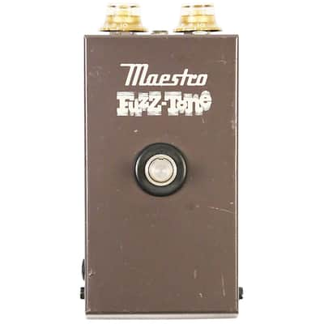

⚡ Pas le temps — résumé 30 secondes
- 🔵 Dunlop Fuzz Face Mini FFM3 — Le son Hendrix. Germanium vintage, organique, imprévisible.
- 🔴 Electro-Harmonix Big Muff Pi — Le mur de son. Sustain infini, puissance brute. Le meilleur rapport qualité/prix.
- 🟣 Boss FZ-5 — Le caméléon. 3 modes d'émulation, fiabilité Boss, taillé pour la scène.
Tu es là, pédale de fuzz en main, et tu hésites entre trois monstres sacrés. D'un côté le Fuzz Face — le circuit de Jimi Hendrix, du psychédélisme pur, un son venu d'une autre galaxie. De l'autre le Big Muff Pi — la baffe au visage préférée de Gilmour et de Jack White, mur de son garanti. Et au milieu le Boss FZ-5 numérique qui prétend les imiter tous les deux dans un boîtier compact.
La vérité ? Ces trois pédales ne font pas la même chose, ne s'adressent pas aux mêmes guitaristes, et ne sonnent pas dans les mêmes conditions. Ce comparatif va trancher. Tu auras un vainqueur clair pour chaque profil — blues, rock, scène, studio — parce que la meilleure pédale fuzz est celle qui correspond à ton jeu, pas celle qui a le plus de buzz sur les forums.
L'accident qui a tout changé
Le fuzz n'a pas été inventé — il a été découvert par accident. En 1960, un amplificateur Maestro défaillant transforme la guitare de Marty Robbins en quelque chose d'étrange, de rugueux, d'électrique. Gibson s'empare de l'idée et lance le Maestro FZ-1 en 1962. Keith Richards l'utilise sur Satisfaction en 1965 — et tout bascule. Le fuzz passe de curiosité à révolution.
Jimi Hendrix s'empare du Fuzz Face en 1966 et en fait son identité sonore. Sur Purple Haze, sur Voodoo Child, le Fuzz Face devient inséparable du génie. Quelques années plus tard, Electro-Harmonix crée le Big Muff Pi — plus lourd, plus épais, plus dévastateur. David Gilmour l'adopte pour les solos de Comfortably Numb. La guerre des fuzz est déclarée.
🎵 Jimi Hendrix — Voodoo Child (Slight Return)
Les 3 Prétendants

Fuzz Face Mini FFM3
Jim Dunlop
Le Fuzz Face, c'est l'ADN du fuzz. Conçu à la fin des années 60 pour Jimi Hendrix, il a défini ce que le mot « fuzz » voulait dire avant même d'être popularisé. La version Mini FFM3 de Dunlop embarque des transistors au germanium qui lui donnent ce son chaud, organique, légèrement imprévisible.
La magie du Fuzz Face : il réagit au volume de ta guitare. Volume à fond = chaos bienheureux. Volume à mi-course = overdrive crémeux. C'est une pédale qui se joue avec les mains autant qu'avec les pieds.
👍 On aime
- Son germanium chaud et organique
- Réactivité unique au volume guitare
- Format mini, encombrement minimal
- L'authenticité Hendrix
👎 On aime moins
- Sensible à la température (germanium)
- Moins polyvalent que les concurrents
- Peu de sustain comparé au Big Muff

Big Muff Pi
Electro-Harmonix
Là où le Fuzz Face te caresse les oreilles, le Big Muff Pi les empoigne. Un sustain qui semble ne jamais finir et une épaisseur de son qui remplit une pièce entière. David Gilmour l'utilise pour ses solos planants, Jack White pour ses murs de son.
La version Pi (triangle violet) est la plus polyvalente : du fuzz léger en sustain bas, à la purée de son totale en gain maximum. Et son rapport qualité/prix est tout simplement le meilleur du comparatif.
👍 On aime
- Sustain infini, mur de son massif
- Meilleur rapport qualité/prix
- True bypass
- Polyvalent du léger au dévastateur
👎 On aime moins
- Peut manger le mix en groupe
- Moins « dynamique » que le Fuzz Face
- Encombrement du boîtier classique

Boss FZ-5
Boss
Le FZ-5 joue un rôle différent : il ne prétend pas être une pédale vintage, il prétend les imiter toutes. Grâce à la technologie COSM de Boss, il émule trois circuits classiques — le Fuzz Face, le Big Muff et le Maestro FZ-1 — dans un format compact indestructible.
En live, dans une salle bruyante, avec l'adrénaline, la différence avec les pédales analogiques s'entend beaucoup moins. Sa construction Boss (garantie 5 ans, résistante aux chocs) en fait un outil sérieux pour les scènes qui n'ont pas le temps pour les caprices du germanium.
👍 On aime
- 3 sons classiques dans un boîtier
- Fiabilité Boss légendaire
- Garantie 5 ans, insensible au froid
- Plug & play, zéro caprice
👎 On aime moins
- Émulation numérique, moins « vivante »
- Moins de caractère qu'un vrai vintage
- Les puristes lui préfèrent l'analogique